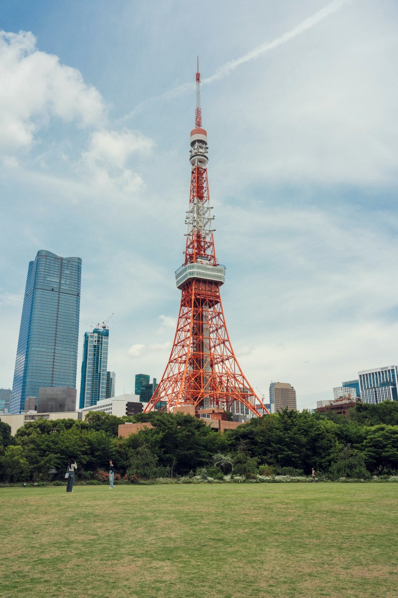
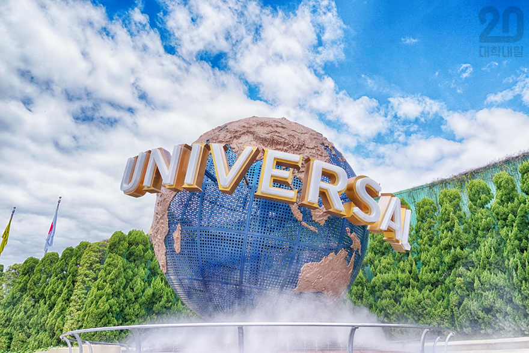
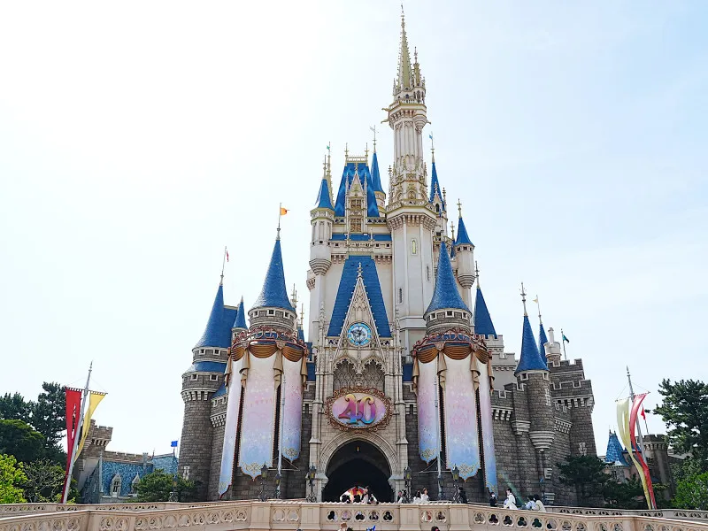

여행 개요
친구들과 함께하는 일본 도쿄와 오사카에서 총 4박 5일 여행 계획. 도쿄 = 랜드마크 방문, 오사카 = 힐링, 일본 전통 체험
상세 일정
- 1월 14일: 나리타 공항 도착 -> 아사쿠사 -> 도쿄 스카이트리
- 1월 15일: 도쿄 디즈니랜드 -> 아키하바라로 이동 -> 근처 호텔 숙박
- 1월 16일: 시부야 -> 도쿄타워(사람 너무 많으면 패스) -> 츠키지 시장 호르몬동 먹기(백종원 추천 맛집)
- 1월 17일: 오사카 이동 -> 도톤보리 구경 -> 저녁 식사(타다키?)
- 1월 18일: 오사카성 방문 -> 쇼핑 옷 적당히, 기념품 -> 귀국
예약 가능 한 곳 링크
나리타 공항 웹사이트 도쿄 디즈니랜드 웹사이트 유니버셜 스튜디오 재팬 웹사이트추천 장소 및 정보
맛집
- 츠키지 스시
- 이치란 라멘
- 오사카의 쿠시카츠 전문점
- 모토무라 규카츠(웨이팅 많이 길다고 함)
- 레드락 로스트비프 덮밥
- 하브스 크레이프
- 모헤지 몬자야끼(개인적으로 제일 가보고 싶은 곳)
- 돈카프 마이센 아오야마 본점
추천 장소 및 정보
랜드마크
사진을 누르면 핫플레이스!
-
도쿄타워
유니버설 스튜디오
디즈니랜드
 도톤보리
도톤보리
*아키하바라 근처 맥도날드 위치*
주소: 맥도날드 아키하바라역앞점(아키하바라 센터 플레이스 빌딩)
기념품 살 만한 것들
- 도쿄 바나나
- 오사카 타코야키 키트
- 지역 한정 키트캣
여행 유의사항
- 환전은 미리 준비하기.
- 제발 돈 막 쓰지 말기.
- 일본은 쓰레기통이 적은 나라, 쓰레기 봉투나 쓰레기 처리방법 생각해보기.
- 교통카드(Suica나 Pasmo) 충전을 미리 해두기.
- 한식은 안 챙겨도 됨. 일본 대중교통 이용법
비상 연락망
친구 1 전화번호:친구 2 전화번호:
친구 3 전화번호:
둘러볼 도쿄 브랜드샵, 편집샵
시부야 근처 디젤 시부야 근처 키스 도쿄점 아트모스 시부야 휴먼메이드 도쿄점추억의 사진 공간
여행 후 이곳에 사진 업로드
사진 공간